Section 1
High-Level Architecture Overview
YouTube serves over 2 billion monthly active users, processes 500 hours of video uploads per minute, and delivers 1 billion hours of watch time daily. The architecture is organized into eight distinct tiers, each independently scalable.
500 hrs
Uploaded per Minute
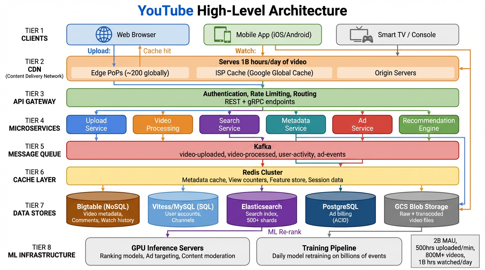
Figure 1: YouTube High-Level Architecture — Eight tiers from clients to ML infrastructure
Diagram Walkthrough: High-Level Architecture
- Tier 1 — Clients: Web browsers, mobile apps (iOS/Android), and smart TVs connect to YouTube. Each platform has different codec support (H.264 universal, VP9 for Chrome/Android, AV1 for newer devices), which drives the need for multi-format transcoding.
- Tier 2 — CDN: The Content Delivery Network is the first responder for video requests. With ~200 edge Points of Presence globally and ISP-embedded caches, it absorbs the majority of video traffic without reaching origin servers. This tier alone handles 1 billion hours of video delivery daily.
- Tier 3 — API Gateway: All non-video API requests (search, metadata, comments) route through the gateway, which handles authentication, rate limiting, and routing to the correct microservice.
- Tier 4 — Microservices: Six core services handle distinct business logic: Upload, Video Processing, Search, Metadata, Ads, and Recommendations. Each service is independently deployable and scalable.
- Tier 5 — Kafka: The event-driven backbone connects services asynchronously. Topics like
video-uploaded, video-processed, and user-activity decouple producers from consumers, enabling each to scale independently.
- Tier 6 — Cache Layer: Redis clusters sit in front of data stores, caching video metadata, view counters, and ML feature vectors. Two different caching patterns (cache-aside and write-back) serve different data characteristics.
- Tier 7 — Data Stores: Five specialized stores each handle different access patterns: Bigtable for NoSQL key-value data, Vitess/MySQL for relational data, Elasticsearch for search, PostgreSQL for ACID billing, and GCS for video files.
- Tier 8 — ML Infrastructure: GPU inference servers run ranking models, ad targeting, and content moderation in real-time. The training pipeline retrains models daily on billions of user events.
Key Design Principle: Strict separation of concerns. The CDN handles content delivery, the API gateway handles auth and routing, microservices handle business logic, Kafka decouples async processing, and specialized data stores handle persistence. Each layer scales independently.
LinkedIn Alternative: Architecture Mapping
| YouTube Tier | LinkedIn Equivalent | Rationale |
|---|
| CDN (Google Edge) | LinkedIn CDN + Akamai | LinkedIn uses a mix of its own edge infrastructure and third-party CDNs for media delivery |
| API Gateway | Rest.li + D2 | Rest.li provides the declarative REST framework; D2 handles dynamic service discovery and client-side load balancing |
| Kafka (Event Bus) | Kafka | LinkedIn invented Kafka — same technology, same role as event backbone |
| Redis Cache | Couchbase + Venice | Couchbase for low-latency caching; Venice for precomputed read-heavy derived data |
| ML Infrastructure | Pro-ML | LinkedIn's end-to-end ML platform for model training, serving, and feature management |
Section 2
Video Upload & Processing Pipeline
When a creator uploads a video, it goes through a multi-stage pipeline: chunked upload, raw storage, and then an asynchronous processing pipeline that splits, transcodes, extracts audio, generates thumbnails, and packages everything into streaming manifests.
2.1 Chunked Upload Protocol
Large video files are split client-side into 5–8MB chunks using the File API's Blob.slice(). Each chunk is sent via a resumable upload protocol with checksums. If the network drops, the client queries the server for the last acknowledged offset and resumes from there.
This is critical for mobile users on unreliable networks — a 2GB video upload that fails at 95% doesn't need to restart from zero.
How Resumable Upload Works
- Initiate: Client sends a POST to create an upload session. Server returns a unique
upload_url with a session ID.
- Chunk: Client splits the file into 5–8MB chunks and sends each as a PUT request with
Content-Range header and MD5 checksum.
- Acknowledge: Server validates the checksum, persists the chunk, and responds with the committed byte offset.
- Resume: On network failure, client sends a GET to the upload URL. Server responds with the last committed offset. Client resumes from that byte.
- Finalize: After the last chunk, server reassembles the complete file, stores it in blob storage, and publishes a
video-uploaded event to Kafka.
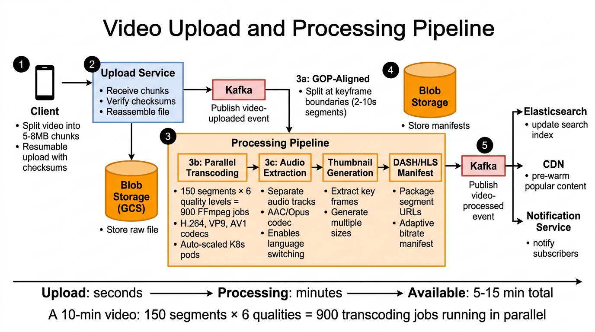
Figure 2: Video Upload and Processing Pipeline — From client upload to playback-ready content
Diagram Walkthrough: Upload & Processing Pipeline
- Client (Step 1): The creator's app splits the video file into 5–8MB chunks. Each chunk includes a checksum for integrity verification. The resumable protocol means only failed chunks need retransmission.
- Upload Service (Step 2): Receives chunks, verifies their checksums against corruption, and reassembles them into the complete raw file. The raw file is immediately written to Blob Storage (GCS) for durability. Simultaneously, a
video-uploaded Kafka event is published to trigger downstream processing.
- Processing Pipeline (Step 3): This is the most compute-intensive stage. The pipeline runs five sub-stages:
- 3a — GOP-Aligned Splitting: The raw video is scanned for keyframes (I-frames) and split into 2–10 second segments at GOP boundaries. Each segment is independently decodable.
- 3b — Parallel Transcoding: Each segment is transcoded into 6 quality levels (240p through 4K) using H.264, VP9, and AV1 codecs. A 10-minute video produces 150 segments × 6 qualities = 900 independent FFmpeg jobs running on auto-scaled Kubernetes pods.
- 3c — Audio Extraction: Audio is separated into its own track using AAC/Opus codecs. This enables language switching without re-downloading video, and audio-only playback for mobile background mode.
- 3d — Thumbnail Generation: Key frames are extracted and thumbnails generated at multiple sizes for different device screens.
- 3e — DASH/HLS Manifest: A manifest file lists all segment URLs by quality level. The player uses this manifest to select and switch quality at segment boundaries.
- Blob Storage (Step 4): All transcoded segments, audio tracks, thumbnails, and manifests are stored back in blob storage.
- Post-Processing Events (Step 5): A
video-processed Kafka event triggers three downstream consumers: Elasticsearch indexes the video for search, the CDN pre-warms popular content, and the Notification Service alerts subscribers.
2.2 GOP-Aligned Splitting & Parallel Transcoding
The raw video is split into 2–10 second segments at Group of Pictures (GOP) boundaries. Each segment starts with a keyframe, making it independently decodable. This enables three critical capabilities:
Parallel Transcoding
Each segment is processed independently. A 10-minute video with 4-second segments produces 150 segments. Transcoded into 6 quality levels = 900 independent FFmpeg jobs running on auto-scaled K8s pods. 10x faster than sequential.
Instant Seeking
Since each segment starts with a keyframe, the player can jump to any boundary without decoding previous frames. Users can scrub through a 2-hour video and land precisely.
Adaptive Bitrate Switching
The player can change quality level at every segment boundary (every 2–10 seconds). When bandwidth drops, the next segment fetched is at a lower quality — seamless transition.
Codec Options
H.264: Widest compatibility (all browsers/devices)
VP9: 30–50% better compression (Chrome, Android)
AV1: 50% better compression (newest, limited HW decode)
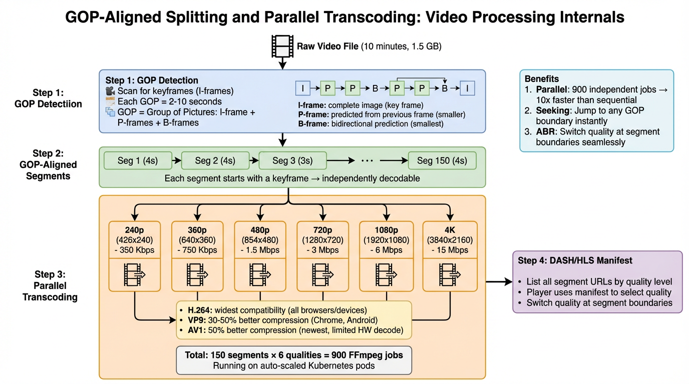
Figure 3: GOP-Aligned Splitting — How a raw video becomes 900 parallel transcoding jobs
Diagram Walkthrough: GOP-Aligned Splitting
- GOP Detection: The pipeline scans the raw video for I-frames (keyframes). An I-frame is a complete image that doesn't depend on any other frame. P-frames (predicted) reference the previous frame and are smaller. B-frames (bidirectional) reference both previous and future frames and are the smallest. The sequence
I → P → P → B → P → P → B → I shows one complete GOP.
- Segment Creation: The video is split at I-frame boundaries into segments of 2–10 seconds. Each segment begins with an I-frame, making it independently decodable. A 10-minute video produces approximately 150 segments.
- Parallel Transcoding: Each of the 150 segments is independently transcoded into 6 quality levels. The resolution and bitrate ladder goes from 240p at 350 Kbps (mobile on slow networks) up to 4K at 15 Mbps (smart TVs on fiber). This creates 900 independent FFmpeg jobs that run concurrently on Kubernetes pods that auto-scale based on queue depth.
- Manifest Generation: After transcoding, a DASH or HLS manifest is created that indexes all segments by quality level. The player downloads this manifest first, then fetches segments at the appropriate quality based on measured bandwidth.
2.3 Audio Separation
Audio is extracted as a separate track from video. This doubles storage but provides three key benefits:
- Language Switching: Users can switch audio language without re-downloading the entire video stream. Only the audio track changes.
- Background Playback: Mobile apps can play audio-only when the app is minimized, saving bandwidth and battery.
- Independent Codec Optimization: Audio uses AAC or Opus (optimized for speech/music), while video uses H.264/VP9/AV1 (optimized for visual compression). Each codec is chosen independently.
LinkedIn Alternative: Video Processing
| YouTube Component | LinkedIn Equivalent | Details |
|---|
| GCS Blob Storage (raw + transcoded) | Ambry | LinkedIn's distributed blob store. Write-once read-many with triple replication across data centers. Handles video uploads for LinkedIn Video and Learning. |
| K8s Auto-scaled Transcoding | Kubernetes + Nimbus | LinkedIn runs transcoding workloads on its own Kubernetes infrastructure managed by the Nimbus platform, with autoscaling based on queue depth. |
| Kafka (video-uploaded event) | Kafka | Identical technology — Kafka originated at LinkedIn. Same event-driven architecture triggers downstream processing. |
Section 3
CDN & Video Streaming
The CDN is the backbone of YouTube's video delivery, serving 1 billion hours of video daily across the globe. Its three-tier architecture minimizes latency and network transit costs while handling extreme traffic volumes.
3.1 Three-Tier CDN Architecture
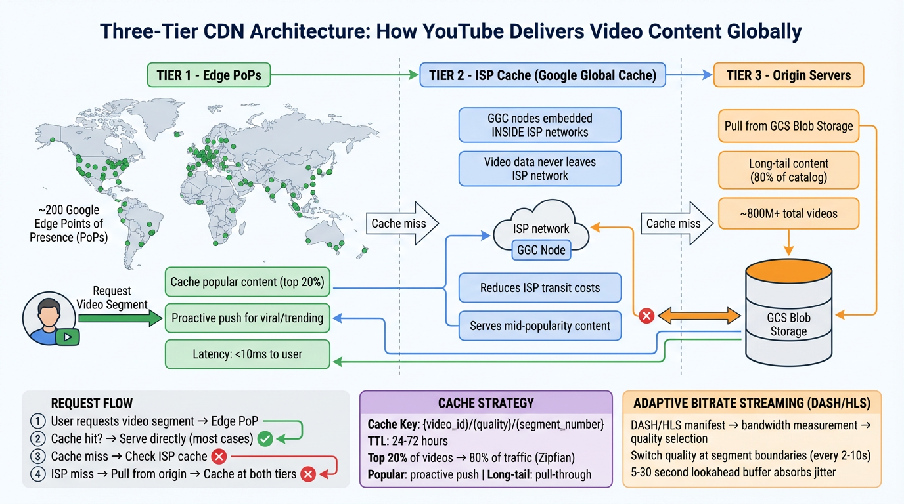
Figure 4: Three-Tier CDN Architecture — From edge PoPs through ISP caches to origin
Diagram Walkthrough: Three-Tier CDN
- Tier 1 — Edge PoPs (~200 globally): These are Google-owned servers positioned in major metropolitan areas and internet exchange points worldwide. They cache the top 20% of videos that generate 80% of traffic (Zipfian distribution). Popular and trending videos are proactively pushed to edge caches before users request them. Latency from user to edge is typically <10ms.
- Tier 2 — ISP Cache (Google Global Cache): GGC nodes are physically installed inside ISP networks. When a user watches a video cached at the GGC node, the video data never leaves the ISP's network — this dramatically reduces transit costs for the ISP and latency for the user. This tier serves mid-popularity content that doesn't warrant edge caching but is too popular for origin-only serving.
- Tier 3 — Origin Servers: For long-tail content (the 80% of the catalog that's rarely watched), origin servers pull from GCS blob storage on demand. The first request is slow, but the pulled content is cached at Tiers 1 and 2 for subsequent requests.
- Request Flow: User requests a video segment → Edge PoP checks its local cache → Cache hit? Serve directly (most cases) → Cache miss? Forward to ISP cache → ISP miss? Pull from origin → Cache the response at both tiers on the way back.
- Cache Key:
{video_id}/{quality}/{segment_number}. Each combination of video, quality level, and segment is cached independently. TTL ranges from 24–72 hours depending on popularity.
3.2 Adaptive Bitrate Streaming (ABR)
The video player implements adaptive bitrate streaming using the DASH manifest:
- Fetch manifest: The player downloads the DASH/HLS manifest listing all available quality levels and segment URLs.
- Measure bandwidth: The player continuously measures actual download speed of each segment.
- Select quality: Based on measured bandwidth, the player selects the highest quality that can be downloaded faster than real-time playback.
- Dynamic switching: At every segment boundary (every 2–10 seconds), the player can switch to a different quality level — no rebuffering needed.
- Lookahead buffer: A 5–30 second buffer absorbs transient network jitter. If bandwidth drops briefly, the buffer sustains playback while the player drops to a lower quality.
LinkedIn Alternative: CDN
| YouTube Component | LinkedIn Equivalent | Details |
|---|
| Google Edge PoPs | LinkedIn CDN + Akamai + Azure CDN | LinkedIn uses a combination of its own edge infrastructure and third-party CDN providers for global media delivery. LinkedIn Video and LinkedIn Learning content are served through this hybrid CDN. |
| GCS Blob Storage (origin) | Ambry | Ambry serves as the origin store for all binary content — video files, images, documents. Write-once read-many with cross-DC replication. |
Section 4
Search System & Index Generation
YouTube's search pipeline transforms a user query into ranked results through six stages: query understanding, Elasticsearch scatter-gather, ML re-ranking, personalization, diversity injection, and result assembly. The entire pipeline runs in under 200ms.
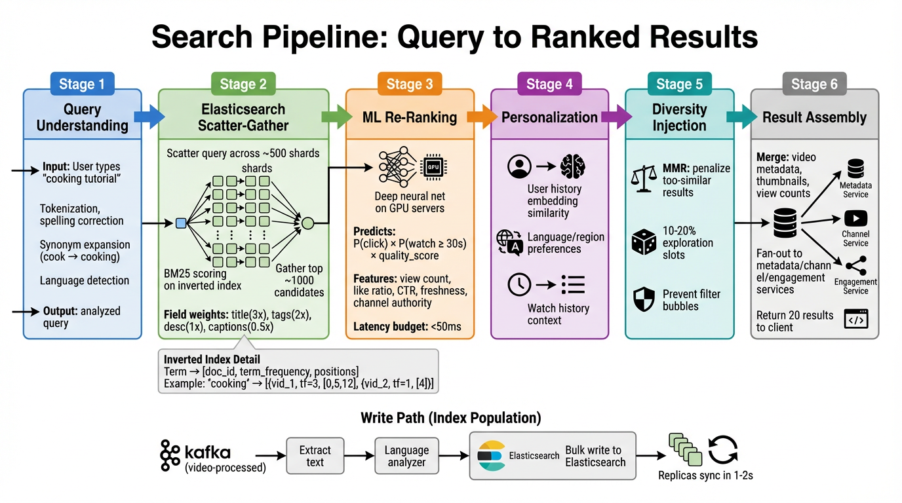
Figure 5: Search Pipeline — Six stages from query to ranked results
Diagram Walkthrough: Search Pipeline
- Stage 1 — Query Understanding: The user types "cooking tutorial." The system tokenizes the input, corrects spelling errors, expands synonyms (cook → cooking), detects the language, and outputs a cleaned, analyzed query. This stage also handles query classification (is this a navigational query for a specific channel, or an exploratory query?).
- Stage 2 — Elasticsearch Scatter-Gather: The analyzed query is scattered across ~500 Elasticsearch primary shards. Each shard runs BM25 scoring against its local inverted index. Fields are weighted differently: title gets a 3x boost (most relevant), tags get 2x, description gets 1x, and auto-generated captions get 0.5x (noisy, less reliable). The coordinator gathers and merges the top ~1,000 candidates from all shards.
- Stage 3 — ML Re-Ranking: The top 1,000 BM25 candidates are re-ranked by a deep neural network running on GPU servers. The model predicts a combined score:
P(click) × P(watch ≥ 30s) × quality_score. Features include view count, like ratio, click-through rate, freshness (newer videos boosted for trending topics), and channel authority. The latency budget for this stage is <50ms.
- Stage 4 — Personalization: The re-ranked results are adjusted based on the specific user: their watch history embedding similarity (have they watched similar content?), language and region preferences, and current session context.
- Stage 5 — Diversity Injection: Maximal Marginal Relevance (MMR) penalizes candidates too similar to already-selected results. 10–20% of slots are reserved for exploration — showing content outside the user's typical patterns. This prevents filter bubbles and improves long-term engagement.
- Stage 6 — Result Assembly: The final ranked list is enriched by fanning out to metadata, channel, and engagement services. Each result gets its thumbnail, title, channel name, view count, and upload date. The assembled response of 20 results is returned to the client.
4.1 Inverted Index & BM25
Elasticsearch maintains an inverted index that maps terms to document lists. For each term, the index stores:
[doc_id, term_frequency, positions]
Example: "cooking" → [{vid_1, tf=3, [0,5,12]}, {vid_2, tf=1, [4]}]
This means "cooking" appears in vid_1 three times at positions 0, 5, and 12, and in vid_2 once at position 4. Positions enable phrase queries ("cooking tutorial" must have both terms adjacent).
Index Population (Write Path)
- A Kafka consumer listens on the
video-processed topic.
- For each new video, it extracts title, description, tags, and auto-generated captions.
- Text passes through a language-specific analyzer: lowercasing, stemming (cooking → cook), stop-word removal (the, a, is).
- Analyzed tokens are bulk-written to Elasticsearch.
- Replicas sync within 1–2 seconds (near real-time).
4.2 ML Re-Ranking
Why not just use BM25? BM25 ranks by text relevance alone. A video titled "Cooking Tutorial" uploaded yesterday with 10 views would rank equally to one with 50 million views and a 98% like ratio. The ML model incorporates engagement signals, freshness, channel authority, and user-specific preferences to produce much better rankings.
LinkedIn Alternative: Search
| YouTube Component | LinkedIn Equivalent | Details |
|---|
| Elasticsearch (500+ shards) | Galene | LinkedIn's custom-built search engine. Unlike Elasticsearch which is general-purpose, Galene is optimized specifically for LinkedIn's search needs: people, jobs, companies, posts, and content. Supports early termination, tiered ranking, and custom scoring plugins. |
| ML Re-Ranking (GPU) | Pro-ML + Galene Ranking | LinkedIn's ML platform (Pro-ML) trains ranking models. Galene integrates these models directly into its scoring pipeline. Features include member profile similarity, network proximity, and engagement predictions. |
| Kafka (index population) | Kafka + Brooklin | Kafka streams new content events. Brooklin (LinkedIn's Change Data Capture framework) streams Espresso changes to keep the search index in sync with the source of truth. |
Section 5
Cache Architecture
YouTube uses two fundamentally different caching patterns for different data types. Understanding why each pattern is chosen is the key interview insight.
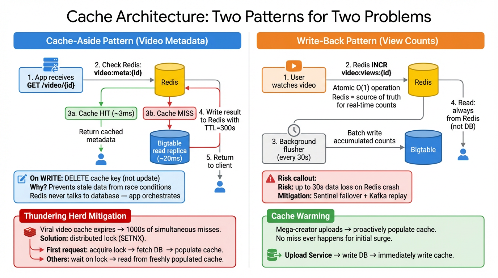
Figure 6: Cache Architecture — Cache-Aside for metadata vs Write-Back for counters
Diagram Walkthrough: Two Caching Patterns
- Cache-Aside (Left): The application checks Redis on every read. On a cache hit (~3ms), data is returned immediately. On a cache miss, the application queries Bigtable's read replica (~20ms), writes the result back to Redis with a 300-second TTL, and returns it. The critical rule: on a write, the application deletes the cache key rather than updating it. Why? If two concurrent writes update the cache, they can write in the wrong order, leaving stale data. Deletion is safe — the next read will populate fresh data.
- Write-Back (Right): View count updates go directly to Redis using
INCR (atomic O(1) operation). Redis is the source of truth for real-time counts. Every 30 seconds, a background flusher batch-writes accumulated counts from Redis to Bigtable for durability. Reads always come from Redis, never from the database. The risk: up to 30 seconds of data loss if Redis crashes before flushing. Mitigation: Sentinel failover promotes a replica within seconds, and Kafka replay can recover lost increments.
- Thundering Herd (Bottom-Left): When a viral video's cache expires, thousands of simultaneous cache misses could overwhelm the database. The solution: request coalescing via a distributed lock (
SETNX). The first request acquires the lock, fetches from the database, and populates the cache. All other requests wait on the lock and then read from the freshly populated cache.
- Cache Warming (Bottom-Right): For predictable traffic spikes (mega-creator uploads), the Upload Service proactively populates the cache immediately after writing to the database. No cache miss ever occurs during the initial surge of views.
5.1 Cache-Aside Pattern (Video Metadata)
When to use: Read-heavy data that changes infrequently. Video metadata (title, description, duration) is read on every /watch page load but only changes when a creator edits their video — maybe once a month.
Cache key: video:meta:{id}
TTL: 300 seconds (5 minutes)
Hit rate: ~95%+ for popular videos
5.2 Write-Back Pattern (View Counts)
When to use: Write-heavy counters where real-time accuracy matters more than durability. With potentially millions of view increments per second across all videos, each increment going to the database would be prohibitively expensive.
Key insight: Nobody cares if a view count is stale by 3 seconds. But everybody notices if the counter doesn't increment when they press play. Redis INCR is atomic O(1) — it handles millions of increments per second.
5.3 Thundering Herd & Cache Warming
Two complementary strategies prevent the database from being overwhelmed during traffic spikes:
Thundering Herd Problem
A viral video's cache key expires. 10,000 concurrent requests all see a cache miss simultaneously. All 10,000 hit the database at once. The database becomes overloaded, response times spike, and a cascading failure begins.
Solution: Request Coalescing
The first request acquires a distributed lock (SETNX in Redis). It fetches from the database and populates the cache. All other requests detect the lock, wait briefly, then read from the freshly populated cache. Only 1 database query instead of 10,000.
LinkedIn Alternative: Caching
| YouTube Component | LinkedIn Equivalent | Details |
|---|
| Redis (metadata cache-aside) | Couchbase | LinkedIn uses Couchbase as its primary distributed cache for low-latency key-value lookups. Supports automatic failover, cross-DC replication, and sub-millisecond reads. |
| Redis (view counters, write-back) | Couchbase + Espresso | Counter increments go to Couchbase for real-time reads, with periodic flush to Espresso for durability. Espresso's conditional update (CAS) prevents lost updates. |
| Redis (ML feature store) | Venice | Venice is LinkedIn's derived data store purpose-built for serving precomputed ML features. Batch or incremental ingestion from offline pipelines, millisecond-latency reads. Replaces Redis feature store with better operational properties. |
Section 6
Video Metadata Fetch: Fan-Out Pattern
Loading a single /watch page requires data from five independent services, each with its own cache and data store. The aggregator fans out to all five in parallel, merges results, and returns a single response. Total latency = max(individual latencies) ≈ 15–20ms.
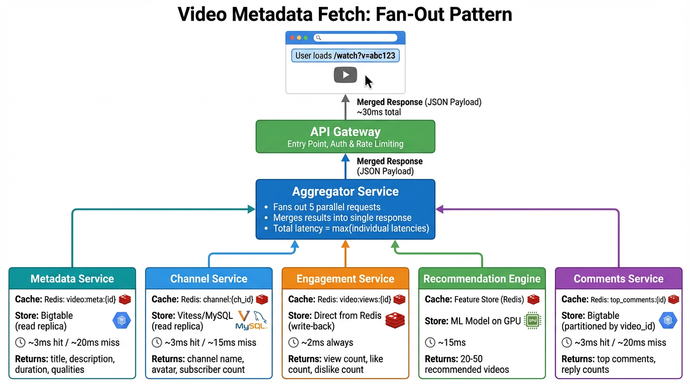
Figure 7: Video Metadata Fetch — Fan-out to 5 services, merge into single response
Diagram Walkthrough: Fan-Out Pattern
- User Request: A user loads
/watch?v=abc123. The request hits the API Gateway, which routes it to the Aggregator Service.
- Fan-Out: The Aggregator Service sends 5 requests in parallel to independent microservices. This is the key optimization — parallel execution means total latency equals the slowest individual response, not the sum of all responses.
- Metadata Service (~3ms hit / ~20ms miss): Returns video title, description, duration, and available quality levels. Cache key:
video:meta:{id} in Redis, backed by Bigtable read replica.
- Channel Service (~3ms hit / ~15ms miss): Returns channel name, avatar URL, and subscriber count. Cache key:
channel:{ch_id} in Redis, backed by Vitess/MySQL read replica.
- Engagement Service (~2ms always): Returns view count, like count, and dislike count. This always reads from Redis (write-back pattern) — never hits the database. Fastest of all five services.
- Recommendation Engine (~15ms): Returns 20–50 personalized video recommendations for the sidebar. Uses the Redis-backed feature store and GPU inference for ranking. This is the slowest service and typically determines total latency.
- Comments Service (~3ms hit / ~20ms miss): Returns the top comments and reply counts. Cache key:
top_comments:{id} in Redis, backed by Bigtable partitioned by video_id.
- Merge & Return: The Aggregator merges all five responses into a single JSON payload and returns it to the client. Total latency ≈ 15–20ms (bounded by the Recommendation Engine).
| Service | Cache Layer | Data Store | Latency |
|---|
| Metadata Service | Redis: video:meta:{id} | Bigtable (read replica) | ~3ms hit / ~20ms miss |
| Channel Service | Redis: channel:{ch_id} | Vitess/MySQL (read replica) | ~3ms hit / ~15ms miss |
| Engagement Service | Redis: video:views:{id} | Direct from Redis (write-back) | ~2ms always |
| Recommendation Engine | Feature Store (Redis) | ML Model on GPU | ~15ms |
| Comments Service | Redis: top_comments:{id} | Bigtable (by video_id) | ~3ms hit / ~20ms miss |
LinkedIn Alternative: Fan-Out Pattern
| YouTube Service | LinkedIn Equivalent | Details |
|---|
| Aggregator Service | Rest.li Finder + D2 | Rest.li provides the scatter-gather framework. D2 handles service discovery, routing each fan-out leg to the correct service instance with client-side load balancing. |
| Metadata Service (Bigtable) | Espresso | Post/article metadata stored in Espresso. Key-value access by document ID with auto-sharding and read replicas. |
| Channel Service (MySQL) | Espresso | Member/company profiles stored in Espresso. Espresso's document model handles both relational-like and NoSQL access patterns. |
| Engagement Service (Redis) | Couchbase + Venice | Like/share/comment counts cached in Couchbase for real-time reads. Venice serves precomputed engagement aggregations. |
| Recommendation Engine | Pro-ML + Venice | Pro-ML serves ranking models. Venice provides the feature store with precomputed member and content embeddings. |
Section 7
NoSQL Data Model (Bigtable)
7.1 Column Family Layout
Bigtable organizes columns into column families stored together on disk. Each family has different compression, TTL, and garbage collection policies. This is the most important design decision in Bigtable modeling — separating high-write from high-read data prevents write amplification from interfering with read performance.
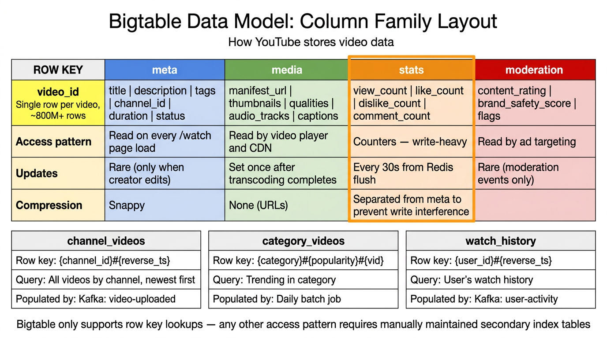
Figure 8: Bigtable Column Family Layout — Four families with distinct access patterns
Diagram Walkthrough: Column Family Layout
- Row Key (
video_id): Each row represents one video. With 800M+ total videos, this is a massive table. The row key is the video ID, enabling direct lookup by ID in O(1) time.
meta family (blue): Contains title, description, tags, channel_id, duration, and status. Read on every /watch page load but rarely updated (only when a creator edits). Compressed with Snappy for storage efficiency. This is the highest-read family.media family (green): Contains manifest_url, thumbnails, available qualities, audio_tracks, and captions. Read by the video player and CDN. Set once after transcoding completes and never updated again. URLs aren't compressed (already compact).stats family (orange, highlighted): Contains view_count, like_count, dislike_count, and comment_count. This is the write-heavy family, updated every 30 seconds from the Redis flush. Critically, it's separated from the meta family — if stats writes were co-located with meta reads, write amplification (compaction during writes) would increase read latency on the meta family.moderation family (red): Contains content_rating, brand_safety_score, and flags. Read by the ad targeting system to determine which ads are safe to show alongside this video. Updated rarely, only when content moderation events occur.
7.2 Secondary Indexes
Key limitation: Bigtable only supports row key lookups. Any other access pattern (e.g., "all videos by channel X" or "user Y's watch history") requires manually maintained secondary index tables, populated by Kafka consumers.
| Index Table | Row Key | Query | Populated By |
|---|
channel_videos | {channel_id}#{reverse_ts} | All videos by channel, newest first | Kafka: video-uploaded |
category_videos | {category}#{popularity}#{vid} | Trending in category | Daily batch job |
watch_history | {user_id}#{reverse_ts} | User's watch history | Kafka: user-activity |
Why reverse_ts? Bigtable stores rows in lexicographic order. Using MAX_TIMESTAMP - actual_timestamp as part of the key means the most recent entries appear first in a scan. A query for "latest 10 videos by channel X" is a simple prefix scan with limit 10, scanning forward from the beginning of that channel's key range.
LinkedIn Alternative: Data Model
| YouTube Component | LinkedIn Equivalent | Details |
|---|
| Bigtable (NoSQL, column families) | Espresso | Espresso is LinkedIn's NoSQL document store. Unlike Bigtable's column family model, Espresso uses a document model (JSON-like). It provides auto-sharding, master-slave replication, and secondary indexes natively — no need for manually maintained index tables. Supports conditional updates (CAS) for consistency. |
| Bigtable secondary index tables | Espresso Secondary Indexes | Espresso supports declarative secondary indexes out of the box. The channel_videos index (all videos by a channel) would be a secondary index on channel_id with a sort key. No Kafka consumer needed to maintain it. |
| Bigtable (watch history, time-series) | Espresso + Venice | Raw watch history in Espresso (mutable, append-heavy). Precomputed "recently watched" feeds in Venice (read-optimized derived data). |
Section 8
Ad Serving Pipeline
YouTube generates ~$30B in annual ad revenue. Every ad opportunity triggers a real-time auction that must complete in under 100ms. The auction uses second-price (Vickrey) bidding where the winner pays $0.01 more than the second-highest effective bid.
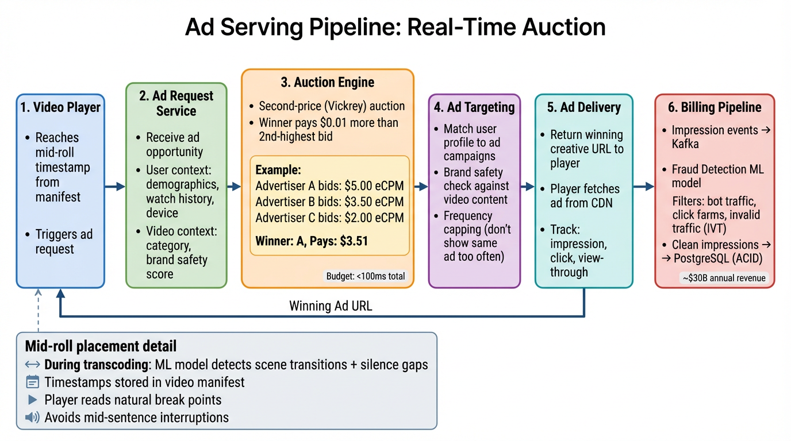
Figure 9: Ad Serving Pipeline — Real-time auction from ad request to billing
Diagram Walkthrough: Ad Serving Pipeline
- Step 1 — Video Player: During transcoding, an ML model analyzed the video for scene transitions and silence gaps. These timestamps are stored in the DASH manifest. When the player reaches a natural break point, it triggers an ad request. This ensures ads don't interrupt mid-sentence.
- Step 2 — Ad Request Service: Receives the ad opportunity with context about the user (demographics, watch history, device type) and the video (category, brand safety score). This context determines which ads are eligible to compete.
- Step 3 — Auction Engine: All eligible ad campaigns submit bids. The auction uses second-price (Vickrey) bidding: the winner pays $0.01 more than the second-highest bid. Example: Advertiser A bids $5.00, B bids $3.50, C bids $2.00. A wins but pays $3.51 (not their full $5.00 bid). This mechanism incentivizes truthful bidding — you should always bid your true value because you'll never pay more than the next highest bidder. Budget: entire auction must complete in <100ms.
- Step 4 — Ad Targeting: Matches the user profile to ad campaigns. Checks brand safety (a family-friendly ad shouldn't appear on violent content). Applies frequency capping (don't show the same ad 10 times in one session).
- Step 5 — Ad Delivery: Returns the winning creative's URL to the player. The player fetches the ad directly from the CDN. Impression, click, and view-through events are tracked for billing and analytics.
- Step 6 — Billing Pipeline: Impression events flow through Kafka to the fraud detection ML model. The model identifies and filters bot traffic, click farms, and invalid traffic (IVT). Only clean, validated impressions are written to PostgreSQL (ACID transactions for financial integrity). Advertisers are billed only for verified impressions.
Ad Auction: Second-Price (Vickrey) Bidding
Why second-price? In a first-price auction, advertisers have to guess what others are bidding and shade their bids down to avoid overpaying. This leads to inefficient outcomes. In a second-price auction, the optimal strategy is to bid your true value — you'll win when your value exceeds the competition, and you'll never pay more than the second-highest bid. This maximizes revenue for YouTube while keeping advertisers honest.
Advertiser A bids: $5.00 eCPM
Advertiser B bids: $3.50 eCPM
Advertiser C bids: $2.00 eCPM
Winner: Advertiser A
Pays: $3.51 (second-highest bid + $0.01)
LinkedIn Alternative: Ad Serving
| YouTube Component | LinkedIn Equivalent | Details |
|---|
| Real-Time Auction Engine | LinkedIn Ad Server | LinkedIn's ad platform runs similar real-time auctions for sponsored content, InMail, and display ads. Uses a combination of first-price and second-price auctions depending on the ad format. |
| PostgreSQL (ACID billing) | Espresso (ACID mode) | Ad billing records stored in Espresso with strong consistency and conditional updates. Financial records require ACID guarantees to prevent revenue loss or overcharging. |
| Fraud Detection ML | Pro-ML + Samza | Samza stream processors analyze impression streams in real-time. Pro-ML models classify invalid traffic. LinkedIn's professional context makes ad fraud detection different from consumer platforms — more sophisticated bot detection but lower volume. |
| Kafka (ad events) | Kafka | Same technology. Ad impression and click events flow through Kafka to billing, analytics, and fraud detection consumers. |
Section 9
Recommendation Engine
The recommendation system reduces 800M+ videos to 20–50 personalized suggestions through a two-stage pipeline: candidate generation (broad retrieval of ~800 candidates) followed by a deep ranking model (precise scoring and ordering).
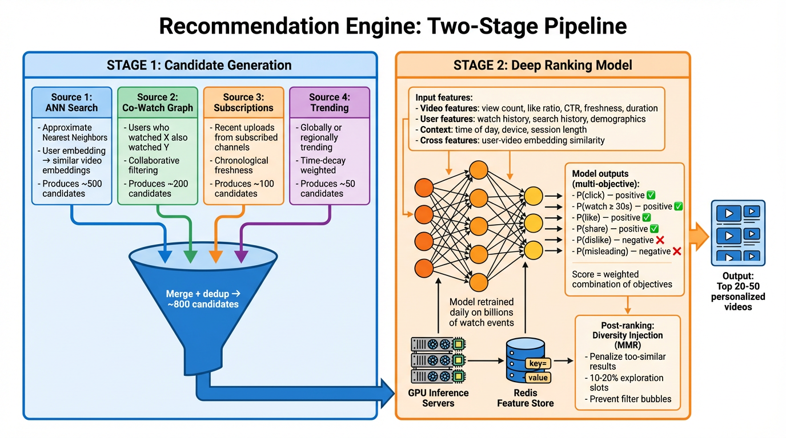
Figure 10: Recommendation Engine — Two-stage pipeline from 800M videos to 20 personalized results
Diagram Walkthrough: Recommendation Engine
- Stage 1 — Candidate Generation: Four parallel sources generate candidate videos:
- ANN Search (~500 candidates): The user's embedding (a vector representing their interests) is compared against all video embeddings using Approximate Nearest Neighbors. This finds videos semantically similar to what the user has enjoyed. ANN is approximate (not exact) to keep latency under 10ms even with 800M+ vectors.
- Co-Watch Graph (~200 candidates): Collaborative filtering based on "users who watched X also watched Y." This captures patterns that content-based methods miss — for example, users who watch cooking videos might also watch food travel vlogs.
- Subscriptions (~100 candidates): Recent uploads from channels the user subscribes to. These are naturally relevant and have high CTR. Sorted by chronological freshness.
- Trending (~50 candidates): Globally or regionally trending videos with time-decay weighting. These add serendipity and keep the feed fresh with current events.
All candidates are merged and deduplicated, producing approximately 800 unique candidates.
- Stage 2 — Deep Ranking Model: A deep neural network scores each of the 800 candidates. The model uses four feature categories:
- Video features: View count, like ratio, click-through rate, freshness, duration
- User features: Watch history, search history, demographics
- Context features: Time of day, device type, current session length
- Cross features: User-video embedding similarity (dot product)
The model predicts multiple objectives simultaneously: P(click), P(watch ≥ 30s), P(like), P(share) are positive signals. P(dislike) and P(misleading) are negative signals. The final score is a weighted combination. The model runs on GPU inference servers with pre-cached embeddings from a Redis-backed feature store. It's retrained daily on billions of watch events.
- Post-Ranking — Diversity Injection (MMR): Maximal Marginal Relevance penalizes candidates too similar to already-selected results. Without this, the top 20 results might all be cooking videos if the user recently watched one. 10–20% of slots are reserved for exploration, introducing the user to topics outside their usual patterns. This prevents filter bubbles and improves long-term engagement.
LinkedIn Alternative: Recommendations
| YouTube Component | LinkedIn Equivalent | Details |
|---|
| ANN Search (video embeddings) | Pro-ML + Venice | Member and content embeddings stored in Venice for millisecond-latency retrieval. ANN search uses LinkedIn's custom vector similarity infrastructure. |
| Co-Watch Graph | Samza + Venice | "Members who viewed this profile also viewed..." — computed by Samza stream processing on Kafka events, stored in Venice for serving. |
| Deep Ranking Model (GPU) | Pro-ML | LinkedIn's ML platform handles the full lifecycle: feature engineering, model training (daily on billions of events), serving on GPU clusters. Powers Feed ranking, "People You May Know," and Job recommendations. |
| Redis Feature Store | Venice | Venice is purpose-built for this use case: batch or incremental ingestion of precomputed features, millisecond reads at serving time, eventually consistent with source pipelines. |
Section 10
Kafka Message Queue Topology
Kafka serves as the event-driven backbone connecting all YouTube services. Each topic is partitioned by its primary entity key for ordering guarantees. Consumer groups use at-least-once delivery with idempotent handlers.
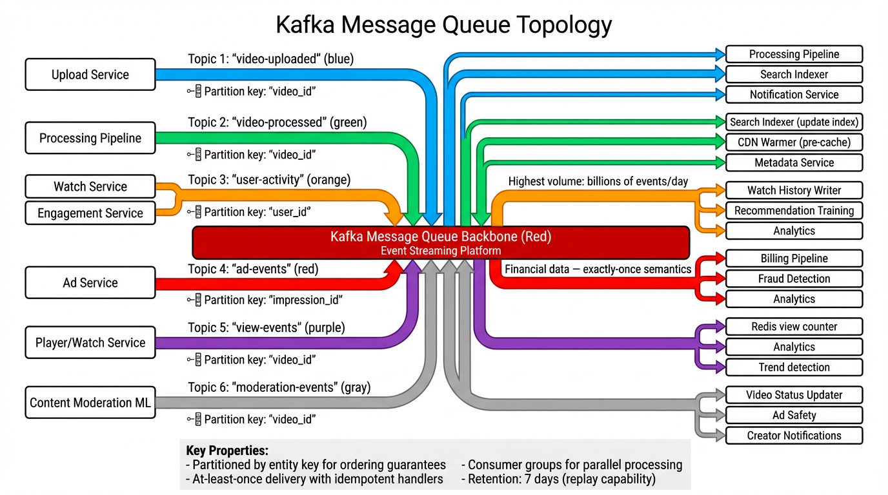
Figure 11: Kafka Topology — Six topic families connecting producers and consumers
Diagram Walkthrough: Kafka Topology
- Topic 1 —
video-uploaded (blue): Produced by the Upload Service when a new raw video is stored in blob storage. Consumed by the Processing Pipeline (triggers transcoding), Search Indexer (creates initial index entry), and Notification Service (alerts channel subscribers). Partitioned by video_id to ensure all events for the same video are processed in order.
- Topic 2 —
video-processed (green): Produced by the Processing Pipeline when transcoding and manifest generation complete. Consumed by the Search Indexer (updates the index with extracted text, captions, and thumbnail URLs), CDN Warmer (pre-caches segments at edge PoPs for anticipated popular content), and Metadata Service (updates the video record with available qualities and manifest URL). Partitioned by video_id.
- Topic 3 —
user-activity (orange): The highest-volume topic with billions of events per day. Produced by Watch Service and Engagement Service. Contains watch starts, watch completions, likes, comments, shares, and search queries. Consumed by the Watch History Writer (persists to Bigtable), Recommendation Training (feeds model retraining), and Analytics. Partitioned by user_id to group a user's activity together.
- Topic 4 —
ad-events (red): Financial data requiring the strictest delivery guarantees. Contains impression, click, and view-through events. Consumed by the Billing Pipeline, Fraud Detection, and Analytics. Partitioned by impression_id. Uses exactly-once semantics to prevent double-billing or lost revenue.
- Topic 5 —
view-events (purple): Produced by the Player/Watch Service. Consumed by the Redis view counter (real-time count update), Analytics, and Trend detection (identifies rapidly growing videos). Partitioned by video_id to aggregate view counts per video.
- Topic 6 —
moderation-events (gray): Produced by Content Moderation ML models when a video is flagged or its safety score changes. Consumed by the Video Status Updater (restricts or removes unsafe content), Ad Safety (updates brand safety score for ad targeting), and Creator Notifications (informs creators of policy decisions). Partitioned by video_id.
Key properties across all topics: Partitioned by entity key for ordering guarantees within a partition. At-least-once delivery with idempotent handlers on the consumer side. Consumer groups enable parallel processing across instances. 7-day retention enables replay for debugging, backfill, or recovery.
LinkedIn Alternative: Kafka
LinkedIn invented Kafka. The technology is identical. LinkedIn runs one of the largest Kafka deployments in the world, processing trillions of events per day across hundreds of topics. The same partition-by-entity-key pattern, consumer group model, and at-least-once delivery semantics apply. LinkedIn also uses Brooklin for Change Data Capture (CDC) — streaming database changes to Kafka topics, which YouTube would implement using its own CDC infrastructure.
Section 11
LinkedIn Technology Mapping
For every YouTube component, there's a LinkedIn equivalent. This mapping is invaluable for interview preparation — it demonstrates deep knowledge of multiple technology stacks and the reasoning behind architectural choices.
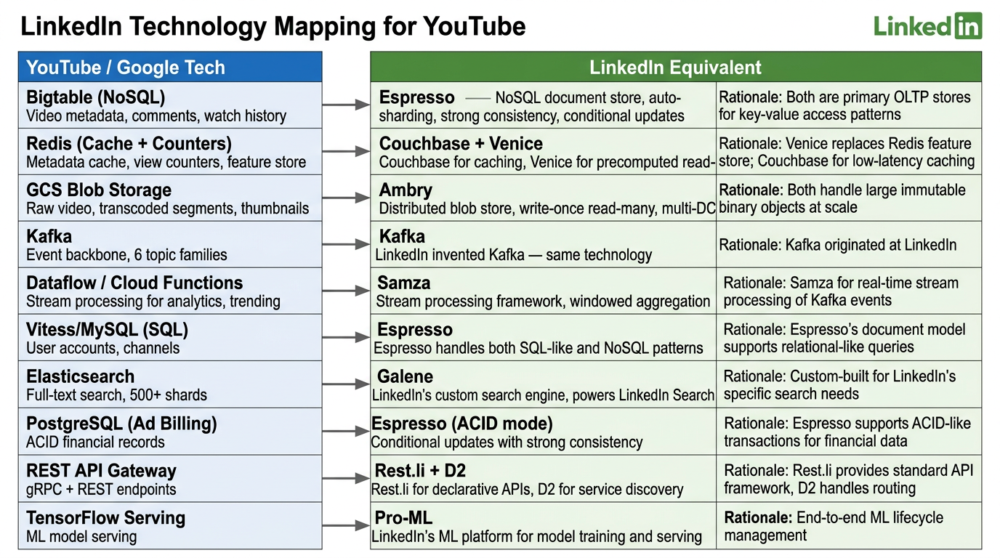
Figure 12: LinkedIn Technology Mapping — YouTube/Google tech to LinkedIn equivalents
Diagram Walkthrough: Technology Mapping
- Bigtable → Espresso: Both are the primary OLTP data store. Bigtable uses a wide-column model; Espresso uses a document model. Espresso adds built-in secondary indexes and conditional updates (CAS) that Bigtable lacks. Both support auto-sharding and replication.
- Redis → Couchbase + Venice: YouTube uses Redis for three purposes: caching (→ Couchbase), counters (→ Couchbase with flush to Espresso), and ML feature store (→ Venice). Venice is purpose-built for serving precomputed data with batch/incremental ingestion — operationally simpler than managing a Redis cluster for feature serving.
- GCS → Ambry: Both handle large, immutable binary objects. Ambry is LinkedIn's distributed blob store with write-once read-many semantics and triple-replication across data centers. Used for profile images, video content, and document attachments.
- Kafka → Kafka: LinkedIn invented Kafka. Same technology, same role. LinkedIn runs one of the world's largest Kafka deployments.
- Dataflow → Samza: Both are stream processing frameworks for real-time computation on event streams. Samza integrates tightly with Kafka (also LinkedIn-invented) for windowed aggregation, real-time analytics, and derived data generation.
- Vitess/MySQL → Espresso: Espresso's document model handles both SQL-like queries (with secondary indexes) and NoSQL key-value patterns. This consolidation reduces operational complexity — one data store instead of two.
- Elasticsearch → Galene: Galene is LinkedIn's custom-built search engine, powering search across people, jobs, companies, and content. Custom-built for LinkedIn's specific ranking needs, with deep integration into the ML ranking pipeline.
- PostgreSQL (Ad Billing) → Espresso (ACID mode): Espresso supports conditional updates with strong consistency for financial data. While not a full RDBMS, its ACID-like guarantees on individual document updates are sufficient for billing records.
- REST API Gateway → Rest.li + D2: Rest.li provides the declarative REST framework with resource models. D2 handles dynamic service discovery and client-side load balancing, routing requests to healthy service instances.
- TensorFlow Serving → Pro-ML: LinkedIn's end-to-end ML platform handles feature engineering, model training, A/B testing (via LIX), and model serving. Manages the full ML lifecycle from data to production.
Detailed Component Comparison
Espresso vs Bigtable
Bigtable (YouTube)
- Wide-column data model
- Row key lookups only
- Manual secondary index tables
- Column families for isolation
- Managed service (GCP)
Espresso (LinkedIn)
- Document data model (JSON-like)
- Built-in secondary indexes
- Conditional updates (CAS/OCC)
- Auto-sharding + replication
- Self-managed within LinkedIn
Venice vs Redis Feature Store
Redis Feature Store (YouTube)
- In-memory, ultra-low latency
- General-purpose key-value store
- Manual data pipeline management
- Sentinel for failover
- Memory-limited (expensive at scale)
Venice (LinkedIn)
- Purpose-built for derived data serving
- Batch + incremental ingestion modes
- Eventually consistent by design
- Built-in versioning and rollback
- Optimized for read-heavy ML serving
Ambry vs GCS
GCS Blob Storage (YouTube)
- Managed cloud storage
- Cross-region replication
- Lifecycle policies (hot → cold → archive)
- Versioning for object history
- Integrated with Google Cloud ecosystem
Ambry (LinkedIn)
- Self-hosted distributed blob store
- Write-once read-many (WORM)
- Triple replication across DCs
- Optimized for large immutable objects
- Lower operational cost at LinkedIn scale
Section 12
SQL vs NoSQL Decision Matrix
Choosing the right data store is one of the most important design decisions. YouTube uses five different stores, each optimized for specific access patterns. The decision tree helps you reason about which store to use for any data type.
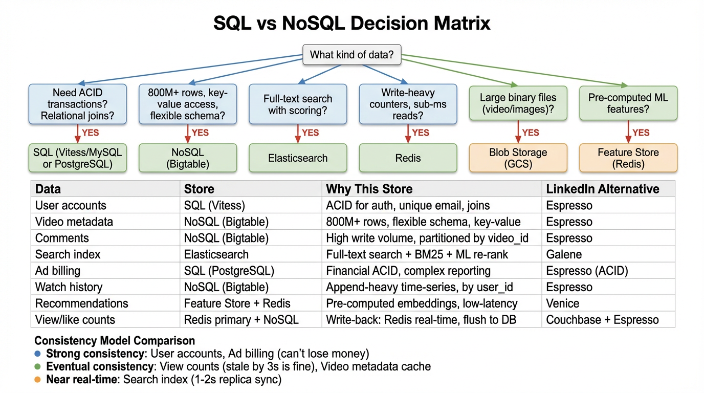
Figure 13: SQL vs NoSQL Decision Matrix — How to choose the right data store
Diagram Walkthrough: Decision Matrix
- Decision Tree: Start with "What kind of data?" and follow the branches:
- Need ACID transactions or relational joins? → SQL (Vitess/MySQL for app data, PostgreSQL for financial data)
- 800M+ rows with key-value access and flexible schema? → NoSQL (Bigtable)
- Full-text search with scoring and ranking? → Elasticsearch
- Write-heavy counters with sub-millisecond reads? → Redis
- Large binary files (video, images)? → Blob Storage (GCS)
- Pre-computed ML features for serving? → Feature Store (Redis)
- Consistency Models: Different data tolerates different consistency levels:
- Strong consistency: User accounts (can't have duplicate registrations) and ad billing (can't lose money or double-charge)
- Eventual consistency: View counts (stale by 3 seconds is fine — nobody notices) and video metadata cache (TTL-based expiration)
- Near real-time: Search index (replicas sync within 1–2 seconds)
| Data | Store | Why This Store | LinkedIn Alternative |
|---|
| User accounts | SQL (Vitess/MySQL) | ACID for auth, unique email constraint, relational joins | Espresso |
| Video metadata | NoSQL (Bigtable) | 800M+ rows, flexible schema, key-value access | Espresso |
| Comments | NoSQL (Bigtable) | High write volume, partitioned by video_id | Espresso |
| Search index | Elasticsearch | Full-text search with BM25 + ML re-ranking | Galene |
| Ad billing | SQL (PostgreSQL) | Financial data needs ACID, complex reporting | Espresso (ACID) |
| Watch history | NoSQL (Bigtable) | Append-heavy time-series, partitioned by user_id | Espresso |
| Recommendations | Feature Store + Redis | Pre-computed embeddings, low-latency serving | Venice |
| View/like counts | Redis primary + NoSQL | Write-back: Redis for real-time, flush to DB | Couchbase + Espresso |
Section 13
Backup & Disaster Recovery
Each data store has a different replication and backup strategy based on its consistency requirements, write volume, and recovery time objectives.
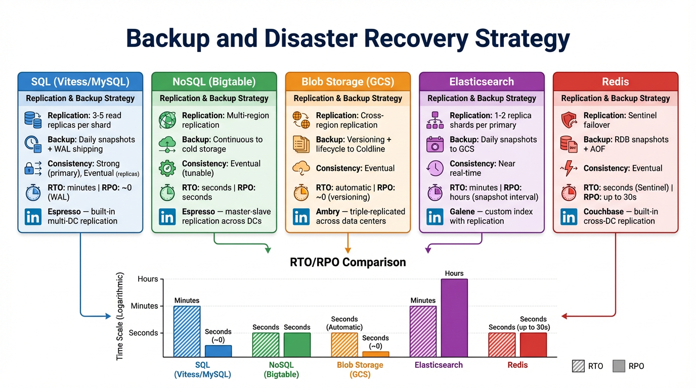
Figure 14: Backup & Disaster Recovery — Replication and recovery strategy per data store
Diagram Walkthrough: Disaster Recovery
- SQL (Vitess/MySQL): 3–5 read replicas per shard handle read scaling. Daily snapshots plus Write-Ahead Log (WAL) shipping enable point-in-time recovery with near-zero data loss (RPO ≈ 0). The primary provides strong consistency; replicas provide eventually consistent reads. RTO is minutes (promote a replica to primary). LinkedIn: Espresso provides built-in multi-DC replication with automatic failover.
- NoSQL (Bigtable): Multi-region replication with continuous backup to cold storage. Tunable consistency — you can trade latency for stronger guarantees. RTO and RPO are both seconds. LinkedIn: Espresso uses master-slave replication across data centers with automatic leader election.
- Blob Storage (GCS): Cross-region replication ensures video files survive a full region outage. Versioning preserves object history. Lifecycle policies automatically move old content from hot to cold to archive storage, reducing costs. RTO is automatic (Google handles it); RPO is near-zero with versioning. LinkedIn: Ambry triple-replicates across data centers.
- Elasticsearch: 1–2 replica shards per primary shard handle both availability and read scaling. Daily snapshots to GCS provide backup. Near real-time consistency (replicas sync in 1–2 seconds). RTO is minutes (restore from snapshot); RPO is hours (gap between snapshots). LinkedIn: Galene has custom index replication.
- Redis: Sentinel provides automatic failover to a replica within seconds. RDB snapshots plus AOF (Append-Only File) provide backup. The main risk: up to 30 seconds of data loss on crash (the write-back flush interval). Mitigation: Kafka replay can recover lost increments. LinkedIn: Couchbase has built-in cross-DC replication with automatic failover.
| Store | Replication | Backup | Consistency | RTO / RPO |
|---|
| SQL (Vitess) | 3–5 read replicas/shard | Daily snapshots + WAL | Strong (primary) | Minutes / ~0 |
| NoSQL (Bigtable) | Multi-region | Continuous to cold storage | Eventual (tunable) | Seconds / Seconds |
| Blob (GCS) | Cross-region | Versioning + lifecycle | Eventual | Automatic / ~0 |
| Elasticsearch | 1–2 replicas/primary | Daily snapshots to GCS | Near real-time | Minutes / Hours |
| Redis | Sentinel failover | RDB + AOF | Eventual | Seconds / up to 30s |
Section 14
Interview Questions & Talking Points
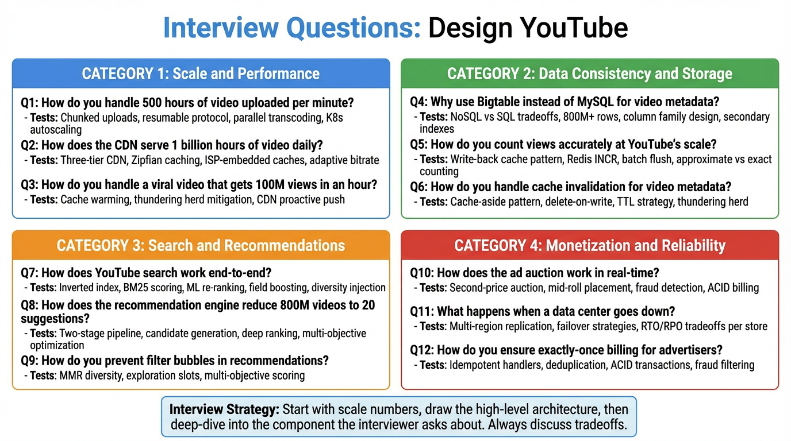
Figure 15: Interview Questions — 12 deep-dive questions in 4 categories
Diagram Walkthrough: Interview Strategy
- Category 1 — Scale and Performance: These questions test your understanding of how YouTube handles extreme volume. Q1 (500 hours/min uploads) tests chunked uploads, parallel transcoding, and K8s autoscaling. Q2 (1B hours/day serving) tests CDN design, Zipfian caching, and ISP-embedded caches. Q3 (viral video handling) tests cache warming and thundering herd mitigation.
- Category 2 — Data Consistency and Storage: These questions test your ability to choose the right data store and caching pattern. Q4 (Bigtable vs MySQL) tests NoSQL tradeoffs and column family design. Q5 (view counting at scale) tests the write-back cache pattern and approximate vs exact counting. Q6 (cache invalidation) tests cache-aside pattern, delete-on-write strategy, and TTL management.
- Category 3 — Search and Recommendations: These questions test your understanding of information retrieval and ML systems. Q7 (search end-to-end) tests inverted index, BM25, and ML re-ranking. Q8 (recommendation reduction) tests the two-stage pipeline and multi-objective optimization. Q9 (filter bubbles) tests diversity injection and exploration strategies.
- Category 4 — Monetization and Reliability: These questions test system reliability and financial integrity. Q10 (ad auction) tests second-price bidding, mid-roll placement, and fraud detection. Q11 (DC failure) tests multi-region replication and failover strategies. Q12 (exactly-once billing) tests idempotent handlers, deduplication, and ACID transactions.
Interview Strategy: Start with scale numbers (they impress interviewers and set context). Draw the high-level architecture with 8 tiers. Then deep-dive into whichever component the interviewer asks about. Always discuss tradeoffs — there's rarely a "right" answer, only tradeoffs the interviewer wants you to reason through.
Key Scale Numbers
500 hrs
Video uploaded per minute
Trade-Offs to Discuss
Eventual vs Strong Consistency
Acceptable for view counts (nobody cares if stale by 3 seconds) but not for ad billing (financial data needs ACID). The system uses different consistency models for different data types.
Denormalization vs Normalization
Channel name stored with video metadata to avoid a join. Trades storage cost for read speed. At 800M+ videos, the join would be prohibitively expensive on every page load.
Audio/Video Separation
Doubles storage but enables language switching without re-downloading video, audio-only background playback on mobile, and independent codec optimization.
Cache-Aside vs Write-Back
Different patterns for different data characteristics. Cache-aside for read-heavy metadata (TTL-based, delete on write). Write-back for write-heavy counters (Redis as primary, batch flush to DB).
Fan-Out Strategy
Fan-out-on-write for small creators (<100K subscribers): pre-compute follower feeds. Fan-out-on-read for mega-creators (millions of subscribers): compute on demand to avoid massive write amplification.
Approximate vs Exact Counting
Not needed for display counters — approximate counting with Redis INCR + dedup window suffices. Exact counts computed in batch analytics for financial reporting.
Common Follow-Up Questions
How do you handle a viral video?
CDN absorbs the read traffic (edge PoPs serve cached segments). Cache warming prevents thundering herd on metadata. Auto-scaled transcoding fleet handles the processing. The system is designed so that popularity doesn't affect backend database load — it's all absorbed at the CDN and cache layers.
What if Redis fails?
Sentinel failover promotes a replica within seconds. For view counts: up to 30 seconds of increments may be lost, but Kafka replay can recover them from the view-events topic. For metadata cache: the application falls through to database read replicas (slightly higher latency but fully functional). For feature store: Venice provides a separate serving path that doesn't depend on Redis.
How does copyright detection work?
Content ID system: During transcoding, the pipeline runs audio fingerprinting (Chromaprint algorithm) and video fingerprinting. These fingerprints are compared against a database of copyrighted material. Matches are flagged for the copyright holder, who can choose to block, monetize (claim ad revenue), or track the video.
Complete Architecture
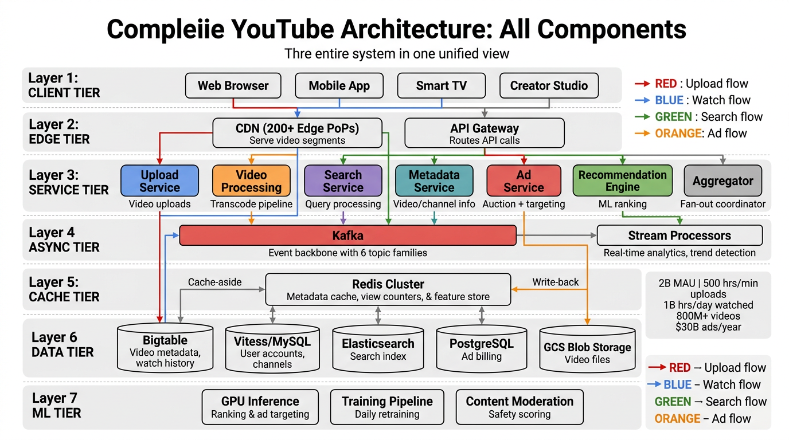
Figure 16: Complete YouTube Architecture — All 7 layers and 4 data flows in one unified view
Diagram Walkthrough: Complete Architecture
- Layer 1 — Client Tier: Web browsers, mobile apps, smart TVs, and Creator Studio. Each platform has different codec support, screen sizes, and network conditions that the system adapts to.
- Layer 2 — Edge Tier: CDN (200+ edge PoPs) serves video segments. API Gateway routes non-video API calls. These are the two entry points into the system.
- Layer 3 — Service Tier: Six core microservices plus the Aggregator. Upload Service and Video Processing handle the write path. Search, Metadata, and Recommendation handle the read path. Ad Service handles monetization. The Aggregator coordinates fan-out reads.
- Layer 4 — Async Tier: Kafka connects everything asynchronously with 6 topic families. Stream Processors (equivalent to Samza at LinkedIn) run real-time analytics and trend detection.
- Layer 5 — Cache Tier: Redis Cluster with two patterns: cache-aside for metadata reads and write-back for view counters and feature store.
- Layer 6 — Data Tier: Five specialized stores, each chosen for its access pattern: Bigtable (NoSQL), Vitess/MySQL (SQL), Elasticsearch (search), PostgreSQL (ACID billing), GCS Blob Storage (video files).
- Layer 7 — ML Tier: GPU Inference servers for real-time ranking and ad targeting. Training Pipeline for daily model retraining. Content Moderation for safety scoring.
Four data flows (colored arrows):
- RED — Upload flow: Client → Upload Service → Blob Storage → Kafka → Video Processing → Blob Storage → CDN
- BLUE — Watch flow: Client → CDN → (cache miss) → Blob Storage
- GREEN — Search flow: Client → API Gateway → Search Service → Elasticsearch → ML Re-rank → Response
- ORANGE — Ad flow: Player → Ad Service → Auction → CDN → Billing Pipeline